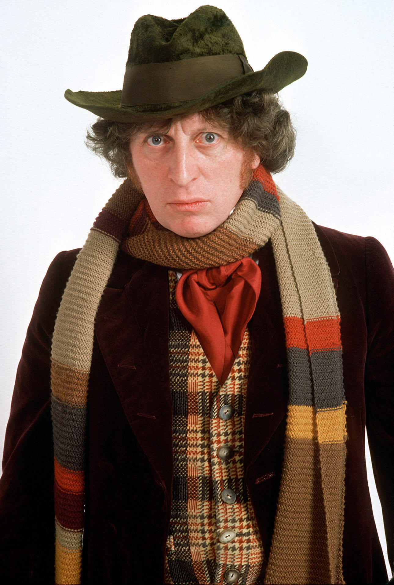

Dördüncü Doktor

Dördüncü Doktor, İngiliz bilim-kurgu dizisi olan Doctor Who'nun baş karakteri olan Doktor'un dördüncü enkarnasyonu. Tom Baker tarafından yedi sezon canlandırılan Dördüncü Doktor, dizinin en çok oynanan Doktor rejenerasyonu olmuştur. Ayrıca, Birleşik Krallık'ta en çok tanınan Doktor olarak bilinir.
5 sezon boyunca dizide kalan Üçüncü Doktor, 1974 yılındaki 6 partlık Planet of the Spiders bölümünde yoğun radyasyondan zehirlenir ve yerini Tom Baker'in canlandırdığı Dördüncü Doktor'a bırakır.
Doktor, yüz yıllardır TARDIS aracılığıyla yol arkadaşlarıyla beraber uzay ve zamanda yolculuk eden bir Zaman Lordu'dur. Doktor ölümcül bir yara aldığında vücudu fiziksel ve kişisel olarak yenilenmeye başlar. Bu duruma rejenerasyon denir. Baker bu zaman lordunun dördüncü enkarnasyonunu canlandırmıştır. İlk yol arkadaşı korkusuz bir gazeteci olan Sarah Jane Smith (Elisabeth Sladen) olmuştur. Önceki rejenerasyonundan beri kendilerine biraz daha geç katılan bir cerrah olan Harry Sullivan (Ian Marter) ile beraber Doktor'un yanındadır. Sonra robot bir köpek olan K-9 onlara katılmıştır. Daha sonraki yol arkadaşları vahşi savaşçı bir uzaylı olan Leela (Louise Jameson), Zaman Leydisi Romana (Mary Tamm ve Lalla Ward), soylu bir uzaylı Nyssa (Sarah Sutton), zeki bir insan olan Adric (Matthew Waterhouse) ve Avustralyalı hostes Tegan (Janet Fielding) olmuştur.